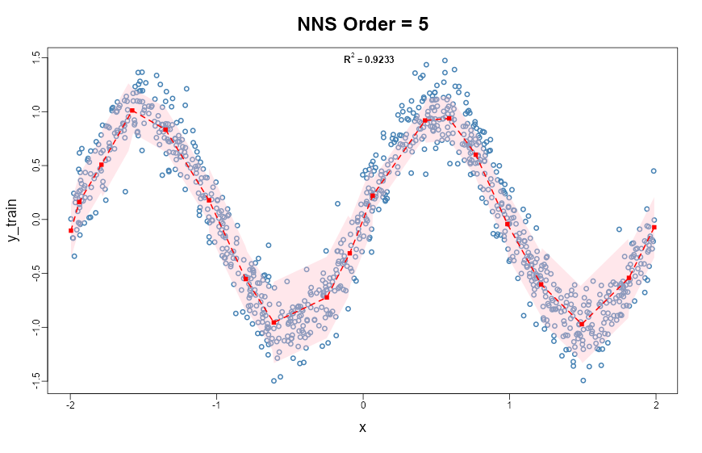

Chapter 17 Prediction Intervals
Previous chapters established the directional framework for probability, dependence, and statistical inference. Chapter 13 derived conditional probability and Bayes’ theorem from co-partial moments, and Chapter 15 developed methods for comparing entire distributions without relying on parametric hypothesis tests — including the formal establishment of the degree-one partial moment CDF as a bias-free, continuous probability representation.
A natural next step is prediction.
In statistical analysis it is often necessary to estimate the range within which future observations are likely to occur. Classical statistics addresses this problem using confidence intervals and prediction intervals. These concepts are frequently confused, but they serve fundamentally different purposes.
This chapter clarifies the distinction and develops distribution-free prediction intervals based on partial moments. Because the directional framework represents distributions directly through probability mass relative to benchmarks, interval estimation can be constructed without parametric assumptions and without relying on asymptotic approximations.
17.1 Confidence Intervals versus Prediction Intervals
A confidence interval estimates an unknown population parameter.
For example, a classical confidence interval for the mean takes the form
\[ \bar{X} \pm z_{\alpha/2} \frac{s}{\sqrt{n}}, \]
where
- \(\bar{X}\) is the sample mean,
- \(s\) is the sample standard deviation,
- \(n\) is the sample size.
This interval reflects uncertainty about the parameter \(\mu = E[X]\).
A prediction interval, by contrast, estimates the range within which a future observation will fall.
For a normally distributed population, a classical prediction interval is
\[ \bar{X} \pm t_{\alpha/2,n-1} s \sqrt{1 + \frac{1}{n}}. \]
Prediction intervals are wider because they incorporate two sources of uncertainty:
- uncertainty about the population parameters, and
- natural variability of individual observations.
In practice, however, classical prediction intervals rely heavily on distributional assumptions, particularly normality.
The directional framework allows prediction intervals to be constructed directly from the empirical distribution, avoiding these assumptions entirely.
17.2 The Discrete–Continuous Distinction: Recap and Application to Intervals
Chapter 15 (Section 15.1.8) established a fundamental result that carries directly into interval estimation. The empirical CDF is a degree-zero lower partial moment — a discrete, step-function measure that is systematically biased at the mean for any finite sample:
\[ \hat{F}_X(\bar{x}) = \frac{1}{n}\sum_{i=1}^n \mathbf{1}_{\{x_i \le \bar{x}\}} \ne 0.5 \]
in general. The degree-one partial moment ratio
\[ F_1(t; X) = \frac{LPM_1(t, X)}{LPM_1(t, X) + UPM_1(t, X)} \]
eliminates this bias exactly: \(F_1(\bar{x}; X) = 0.5\) for every distribution, every sample size, without exception (Section 15.1.8).
This distinction matters for interval estimation because any quantile procedure that uses the discrete CDF to locate interval bounds inherits the same finite-sample bias — producing intervals that are systematically shifted or miscalibrated. The degree-one ratio corrects this at the source.
17.3 Prediction as a Quantile Problem
Prediction intervals can be understood as quantile intervals of the underlying distribution.
Let \(X\) be a random variable with cumulative distribution function \(F_X(t)\). The \(p\)-quantile is defined as
\[ Q_X(p) = \inf \{t : F_X(t) \ge p\}. \]
A prediction interval with coverage probability \(1-\alpha\) is therefore
\[ [Q_X(\alpha/2), \, Q_X(1-\alpha/2)]. \]
For example, a 95% prediction interval corresponds to
\[ [Q_X(0.025),\, Q_X(0.975)]. \]
Classical parametric methods estimate these quantiles using assumed distributions. The directional framework estimates them directly from partial moments, with the additional capability to choose between discrete (degree-zero) and continuous (degree-one) probability representations.
Prediction intervals are one application of quantile inversion, but they are not the only one. The same inversion logic can also be used to select benchmark thresholds for directional decision analysis.
A lower-tail threshold chosen by \[ \inf\{t:F_X(t)\ge \alpha\} \] can be interpreted as the lower endpoint of a tail-quantile construction. In finance this object is often called Value-at-Risk, but the underlying mathematics is much more general. It may represent an acceptable forecast error, a reliability boundary, a minimum service level, or any other adverse threshold defined relative to a benchmark.
This distinction is conceptual rather than mathematical. Prediction intervals ask for a range likely to contain future observations. Threshold analysis asks where the lower tail begins to contain a specified fraction of directional mass. In both cases the central task is quantile inversion.
Once higher degrees are introduced, the interpretation broadens further. Degree-zero thresholds partition observations by frequency. Higher-degree thresholds partition them by severity-weighted directional mass. Thus the quantile framework supports both interval estimation and benchmark-sensitive threshold design.
17.4 Partial-Moment Quantile Functions: LPM.VaR and UPM.VaR
The NNS package provides two complementary quantile functions that invert the partial moment CDF:
LPM.VaR(percentile, degree, variable) — returns the value \(t\) such that \(F_\text{degree}(t; X) = p\) for the lower tail. This is the left-tail (lower) quantile at probability level \(p\).
UPM.VaR(percentile, degree, variable) — returns the value \(t\) such that \(1 - F_\text{degree}(t; X) = p\) for the upper tail. This is the right-tail (upper) quantile at probability level \(p\).
Both functions accept a degree argument. Setting degree = 0 uses the discrete empirical CDF and therefore returns classical empirical quantiles. Setting degree = 1 uses the continuous area-based probability representation established in Chapter 15. Higher degrees extend the same inversion principle to severity-weighted directional probability. Thus LPM.VaR is best interpreted not as a finance-specific tool, but as a general lower-tail threshold operator generated by the partial-moment framework.
For a prediction interval with coverage \(1 - \alpha\):
# 95% prediction interval using continuous (degree = 1) quantiles
lower <- LPM.VaR(percentile = 0.025, degree = 1, x = x)
upper <- UPM.VaR(percentile = 0.025, degree = 1, x = x)In Python the same quantile inversions are lpm_var and upm_var:
from nns import lpm_var, upm_var
# 95% prediction interval using continuous (degree = 1) quantiles
lower = lpm_var(0.025, 1, x)
upper = upm_var(0.025, 1, x)The degree-one quantiles provide smoother, less jagged interval boundaries than their degree-zero counterparts, particularly in small samples where the step-function CDF may produce large jumps between adjacent order statistics.
17.4.1 Generalized Threshold Operators
The notation LPM.VaR can appear more domain-specific than the underlying mathematics actually is. In the present framework, the function returns the benchmark \(t\) that solves a lower-tail threshold problem under a chosen directional degree.
When \(d=0\), the threshold is \[ t_\alpha^{(0)}=\inf\{t:L_0(t;X)\ge \alpha\}, \] which is the ordinary empirical lower quantile.
When \(d=1\), the threshold instead solves \[ t_\alpha^{(1)}=\inf\left\{t:\frac{L_1(t;X)}{L_1(t;X)+U_1(t;X)}\ge \alpha\right\}. \] This no longer counts all observations equally. Larger deviations below the benchmark contribute more heavily to the lower-tail mass.
Similarly, when \(d=2\), \[ t_\alpha^{(2)}=\inf\left\{t:\frac{L_2(t;X)}{L_2(t;X)+U_2(t;X)}\ge \alpha\right\}, \] so extreme adverse deviations receive quadratic weight.
These thresholds therefore define a family of directional calibration rules: \[ \text{degree 0: frequency-calibrated threshold}, \] \[ \text{degree 1: magnitude-calibrated threshold}, \] \[ \text{degree 2: extreme-deviation-calibrated threshold}. \]
This interpretation is fully general. It applies whenever one wishes to choose a threshold not only by how often a process crosses it, but also by how severely the process behaves once crossed.
17.5 Link to Stochastic Dominance (Chapter 15)
Chapters 15 and 17 use the same degree-one quantile geometry from different angles.
- In stochastic dominance (Chapter 15), the ordering is defined by integrated quantile/CDF behavior.
- In prediction intervals (this chapter), interval endpoints are degree-zero or degree-one quantiles from
LPM.VaRandUPM.VaR.
The methods are mathematically unified: the degree-one objects used to construct bias-corrected intervals are the same continuous probability objects used to diagnose dominance relations.
17.6 Comparison with Bootstrap Confidence Intervals
The difference between discrete and continuous partial moment quantiles becomes especially apparent when applied to bootstrap confidence intervals.
Consider the correlation statistic from the law dataset (Efron and Tibshirani, 1993). Standard bootstrap methods produce a range of confidence intervals depending on the method chosen:
library(bootstrap); library(boot)
data("law")
get_r <- function(data, indices, x, y) {
d <- data[indices, ]
round(as.numeric(cor(d[x], d[y])), 3)
}
set.seed(12345)
boot_out <- boot(law, x = "LSAT", y = "GPA", R = 500, statistic = get_r)
boot.ci(boot_out)
## BOOTSTRAP CONFIDENCE INTERVAL CALCULATIONS
## Level Normal Basic
## 95% ( 0.5247, 1.0368 ) ( 0.5900, 1.0911 )
## Level Percentile BCa
## 95% ( 0.4609, 0.9620 ) ( 0.3948, 0.9443 )The distribution of bootstrapped correlations is visibly asymmetric — there is a long left tail and the upper bound exceeds 1.0, which is impossible for a correlation coefficient.
17.7 Degree-Zero Partial Moment Intervals
The degree-zero LPM quantile corresponds exactly to the percentile bootstrap method. The discrete CDF assigns equal weight to each bootstrap replicate, producing the same step-function quantiles:
17.8 Degree-One Partial Moment Intervals
The degree-one quantile uses area-based probability, which weights replicates by their distance from the boundary. This naturally down-weights extreme observations and corrects for asymmetry — without a double bootstrap:
# Continuous CI — bias-corrected, no double bootstrap needed
LPM.VaR(percentile = 0.025, degree = 1, x = boot_out$t)
## [1] 0.5612749
UPM.VaR(percentile = 0.025, degree = 1, x = boot_out$t)
## [1] 0.8263255The bootstrap comparison in Python (the 15-observation law dataset is inlined; the resampling loop replaces boot):
import numpy as np
from nns import lpm_var, upm_var
lsat = np.array([576, 635, 558, 578, 666, 580, 555, 661,
651, 605, 653, 575, 545, 572, 594.0])
gpa = np.array([3.39, 3.30, 2.81, 3.03, 3.44, 3.07, 3.00, 3.43,
3.36, 3.13, 3.12, 2.74, 2.76, 2.88, 2.96])
rng = np.random.default_rng(12345)
boot_t = np.array([
np.round(np.corrcoef(lsat[idx], gpa[idx])[0, 1], 3)
for idx in rng.integers(0, lsat.size, size=(500, lsat.size))
])
# Discrete lower and upper CI — corresponds to percentile method
lpm_var(0.025, 0, boot_t), upm_var(0.025, 0, boot_t)
# Continuous CI — bias-corrected, no double bootstrap needed
lpm_var(0.025, 1, boot_t), upm_var(0.025, 1, boot_t)The degree-one interval \((0.561,\, 0.826)\) is substantially tighter and more symmetric than the percentile interval \((0.461,\, 0.963)\) — and without requiring the computationally expensive double bootstrap needed for studentized intervals. The upper bound is comfortably below 1.0.
Classical bootstrap corrections (BCa, studentized) attempt to fix asymmetry through additional resampling passes or acceleration constants. The degree-one partial moment approach achieves comparable correction by simply replacing the discrete counting measure with area-based probability on the original bootstrap sample — the same substitution that eliminates bias in the NNS ANOVA procedure (Chapter 15, Section 15.1.8).
17.9 Distribution-Free Prediction Intervals
Using the NNS quantile functions, a prediction interval with coverage probability \(1-\alpha\) is constructed as
\[ [\text{LPM.VaR}(\alpha/2,\, d,\, X),\; \text{UPM.VaR}(\alpha/2,\, d,\, X)] \]
for a chosen degree \(d \in \{0, 1\}\).
Degree 0 recovers the classical empirical quantile interval — the order statistics at ranks \(\lceil n\alpha/2 \rceil\) and \(\lceil n(1-\alpha/2) \rceil\).
Degree 1 provides a continuous, bias-corrected alternative that avoids the finite-sample discretization error documented in Section 15.1.8.
No parametric assumptions, no variance estimates, and no asymptotic approximations are required by either variant.
More generally, one may define a lower-tail directional threshold by \[ t_\alpha^{(d)}=\mathrm{LPM.VaR}(\alpha,\text{ degree }=d,X), \] where \(d=0\) corresponds to frequency-based probability and \(d\ge 1\) corresponds to severity-weighted directional probability. The interpretation of the threshold changes with \(d\), but the computational principle remains unchanged: invert the chosen directional probability representation.
17.10 Example
Consider the fully specified sample
\[ X = -2,\,-1,\,0,\,1,\,2,\,3,\,5,\,7,\,9,\,10. \]
For a 90% prediction interval (\(\alpha = 0.10\)):
x <- c(-2, -1, 0, 1, 2, 3, 5, 7, 9, 10)
# Degree 0: classical empirical quantiles
LPM.VaR(percentile = 0.05, degree = 0, x = x)
## [1] -2
UPM.VaR(percentile = 0.05, degree = 0, x = x)
## [1] 10
# Degree 1: continuous area-based quantiles
LPM.VaR(percentile = 0.05, degree = 1, x = x)
## [1] -1.65
UPM.VaR(percentile = 0.05, degree = 1, x = x)
## [1] 9.15In Python:
import numpy as np
from nns import lpm_var, upm_var
x = np.array([-2, -1, 0, 1, 2, 3, 5, 7, 9, 10.0])
# Degree 0: classical empirical quantiles
lpm_var(0.05, 0, x), upm_var(0.05, 0, x)
# Degree 1: continuous area-based quantiles
lpm_var(0.05, 1, x), upm_var(0.05, 1, x)The degree-zero interval is \([-2, 10]\) — anchored exactly at the observed extremes. The degree-one interval is tighter, reflecting the continuous probability mass that lies between order statistics. With only \(n=10\) observations, this difference is practically meaningful.
17.10.1 Worked Threshold Example: Frequency versus Severity
To see how degree changes interpretation, consider a sample \(X\) and a lower-tail calibration level \(\alpha\).
A degree-zero threshold is \[ t_\alpha^{(0)}=\mathrm{LPM.VaR}(\alpha,\text{ degree }=0,X), \] which partitions the sample by event frequency. Approximately an \(\alpha\) fraction of observations lies below the selected threshold.
Now compare this with degree-one and degree-two thresholds: \[ t_\alpha^{(1)}=\mathrm{LPM.VaR}(\alpha,\text{ degree }=1,X), \qquad t_\alpha^{(2)}=\mathrm{LPM.VaR}(\alpha,\text{ degree }=2,X). \] These thresholds are chosen in a different geometry. They do not partition simple counts. Instead they partition severity-weighted directional mass. Large adverse deviations therefore influence the threshold more strongly than small ones.
This leads to an important practical phenomenon. A severity-weighted threshold may occur at a milder benchmark than a frequency-based threshold, yet still produce a less severe set of threshold violations in realized use. The reason is that the rule is designed to trigger earlier, before the most extreme adverse deviations dominate the lower tail. The probability-bounds literature demonstrates this effect empirically in finance examples, but the mechanism is general and should be understood as an early-intervention property of higher-degree threshold calibration.
This distinction matters in many domains:
- in forecasting, a severity-weighted threshold warns before very large misses accumulate,
- in operations, it triggers replenishment before severe shortages emerge,
- in engineering, it signals intervention before large safety-margin breaches dominate the tail.
What appears paradoxical under degree-zero counting becomes natural under directional weighting. The threshold is solving a different partition problem.
17.11 Interpretation and Coverage
Prediction intervals constructed from partial moment quantiles possess a simple probabilistic interpretation.
For general threshold analysis, the interpretation can be stated succinctly. Under degree zero, the lower-tail threshold controls event frequency. Under higher degrees, the threshold controls weighted adverse exposure. The probability statement is therefore exact in the ordinary counting sense only for degree zero. For higher degrees, what is controlled is not raw event count but directional mass in a weighted geometry.
Let \(X_{n+1}\) denote a future observation drawn from the same distribution as the sample. Then
\[ P\bigl(\text{LPM.VaR}(\alpha/2, d, X) \le X_{n+1} \le \text{UPM.VaR}(\alpha/2, d, X)\bigr) \approx 1 - \alpha. \]
For degree \(d = 0\), the approximation converges to equality as \(n \to \infty\).
For degree \(d = 1\), the continuous probability representation reduces finite-sample error, providing improved coverage in small samples without parametric assumptions.
Unlike parametric prediction intervals, neither variant depends on distributional assumptions. Coverage is determined entirely by the empirical probability structure.
17.12 Conditional Prediction Intervals via NNS Regression
Conditional intervals derived from NNS.reg are developed in detail in Chapter 21, where the regression estimator is introduced formally and interpreted geometrically.
For continuity, the key idea is that NNS.reg(..., confidence.interval = ...) builds local intervals from partition-specific empirical distributions. In this chapter, we focus on the unconditional interval mechanics (LPM.VaR / UPM.VaR) that those later conditional constructions rely on.
set.seed(12345)
x <- runif(1000, -2, 2)
y <- sin(pi * x_train) + rnorm(1000, sd = 0.2)
NNS.reg(x = x_train, y = y_train, order = NULL, confidence.interval = .95)In Python:
import numpy as np
from nns import nns_reg
rng = np.random.default_rng(12345)
x_train = rng.uniform(-2, 2, 1000)
y_train = np.sin(np.pi * x_train) + rng.normal(scale=0.2, size=1000)
fit = nns_reg(x_train, y_train, order=None, confidence_interval=0.95)
fit["pred.int"] # local interval bounds from partition-specific distributions
NNS.reg(..., confidence.interval = 0.95) visualization with nonlinear fit and interval bands estimated from local partitions.17.13 Advantages of the Directional Approach
Prediction intervals based on partial moments possess several advantages over classical methods.
Bias elimination.
As established in Chapter 15 (Section 15.1.8), the degree-one partial moment ratio places exactly 50% of probability mass below the mean for every distribution and every sample size. Interval bounds derived from degree-one quantiles do not inherit the systematic bias of the discrete empirical CDF.
Distribution-free construction.
No assumptions about normality or parametric form are required.
Robustness.
Intervals are determined by empirical probability mass rather than moment estimates that may be sensitive to extreme observations.
No double bootstrap required.
Asymmetry correction that classical methods achieve only with computationally expensive double-bootstrap or BCa procedures is obtained automatically from the continuous partial moment representation.
Conditional adaptivity.
Through the NNS regression framework, prediction intervals adapt to local data structure — capturing nonlinearity and heteroskedasticity without parametric specification.
Interpretability.
Intervals correspond directly to probability statements about future observations, rooted in directional partial-moment representations.
A further advantage of the directional approach is that it unifies interval estimation and threshold-based decision analysis. The analyst need not switch theories when moving from prediction intervals to adverse-threshold selection. In both cases the task is to invert a directional probability representation. The only difference is whether mass is counted equally, as in degree zero, or weighted by severity, as in higher degrees.
A second advantage is that threshold analysis can be separated from domain-specific naming conventions. Lower-tail quantiles, conditional lower-tail means, semivariance, and higher-order partial moments can all be interpreted inside a single benchmark-relative framework. The estimation-error literature supports this broader view by treating partial moments as nonparametric statistical objects with useful asymptotic behavior, rather than merely as specialized measures for one field.
17.14 Summary
Prediction intervals describe the range within which future observations are expected to occur.
Classical prediction intervals rely on parametric assumptions and variance estimates. Bootstrap methods correct for asymmetry but require multiple resampling passes. The directional framework constructs intervals directly from the empirical distribution represented by partial moments, with an additional layer of bias correction available through the continuous (degree-one) probability representation established in Chapter 15.
Key results:
- The discrete CDF (\(d=0\)) is a degree-zero partial moment — unbiased asymptotically but systematically biased for any finite sample (Chapter 15, Section 15.1.8).
- The continuous partial moment CDF (\(d=1\)) eliminates this bias exactly, with \(F_1(\bar{x}; X) = 0.5\) without exception.
LPM.VaRandUPM.VaRinvert these CDFs to produce distribution-free quantile intervals at either degree.- Degree-one intervals match or exceed bias-corrected bootstrap intervals without the need for double resampling.
- Conditional prediction intervals from
NNS.regadapt automatically to local nonlinearity and heteroskedasticity.
These ideas complete the core framework for nonparametric statistical inference using directional statistics. The next chapter turns to directional tail thresholds, probability bounds, and estimation error, extending interval logic into benchmark-driven tail-risk decisions before Chapter 17 develops synthetic data generation and bootstrap methods for uncertainty quantification.